2025.09.14 - 永远
向下滑动
爱的计时
每一秒都因你而珍贵
我们的时光轴
每个14号，都是属于我们的情人节
相片情人节
这一天，我们正式在一起。从此，我的世界多了一个你。每一张照片，都记录着我们最初的心动。

葡萄酒情人节
在一起的第一个月，我们一起品尝了爱情的醇香。就像一瓶好酒，越久越浓。
电影情人节
我们一起看电影的日子，有你依偎在我身边，任何电影都变成了最浪漫的故事。
拥抱情人节
寒冷的冬天，你的拥抱是世界上最温暖的港湾。每一次拥抱，都让我感到无比幸福。
你的生日
这是我们在一起后的第一个生日，小宝宝橙子，生日快乐！愿你永远被爱包围，愿你的每一个愿望都能实现。
日记情人节
把每一天的甜蜜都记录下来，翻开回忆，满满都是关于你的美好。
传统情人节
没有橙子的情人节，是一个悲伤的情人节，毫无意义，就像人生一样。今天也有心想是橙哦，橙子天天开心！

你的世界
你的每一个瞬间，都值得被珍藏
之前的你
我有点来迟啦，小宝宝
吃货的你
认真吃饭的样子最可爱
日常的你
平凡中的小美好
旅途的你
世界那么大，和你一起看
可爱的你
每一个表情都让我心动
独立的你
努力发光的样子最迷人

我们的话
那些说过的、想说的、藏在心里的
我说
"我给你一个我的承诺"
你说
"有你我没那么害怕后果了"
我说
"不用害怕，万事有我在，一切安好"
一封情书
写给你的，关于我所有的爱
点击打开
2026年2月14日
亲爱的橙子：
当你看到这封信的时候，我们已经在一起153天了。
还记得2025年9月14日吗？那一天，我鼓起了所有的勇气，只为了能牵住你的手。从那天起，我的世界因为你而变得不同。
谢谢你出现在我的生命里。谢谢你的每一个微笑，每一次拥抱，每一句"我爱你"。你让我知道了什么是真正的幸福。
我喜欢看你演讲时自信的模样，喜欢你认真吃东西的表情，喜欢你撒娇时可爱的声音，喜欢你生气时噘嘴的样子......我喜欢关于你的一切。
每个月的14号，我都想送你一束花，因为你值得世间所有的美好。
未来的日子，我想和你一起走过无数个春夏秋冬。想和你看遍世界每一处风景，想和你尝遍每一道美食，想和你度过每一个清晨与黄昏。
今天是我们的第一个传统情人节，我想对你说：
我爱你，不止今天，不止明天，而是永远。
——永远爱你的比乐熊
照片墙
每一张照片，都是我们的珍贵回忆

 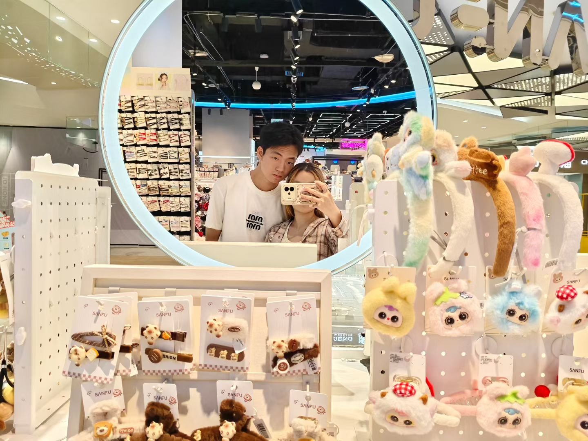
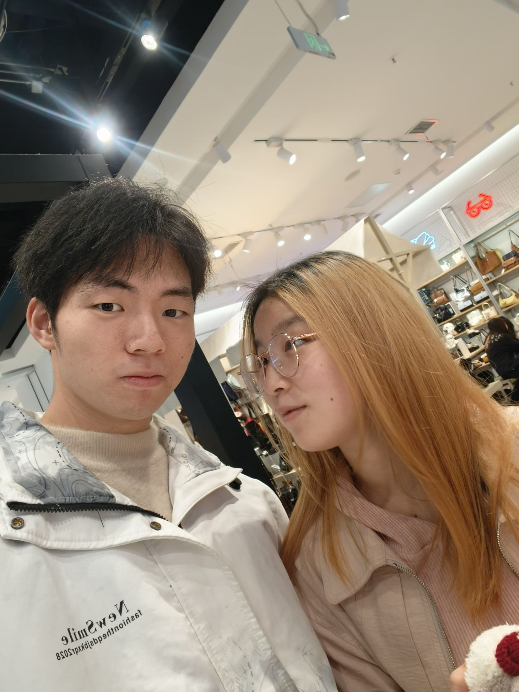
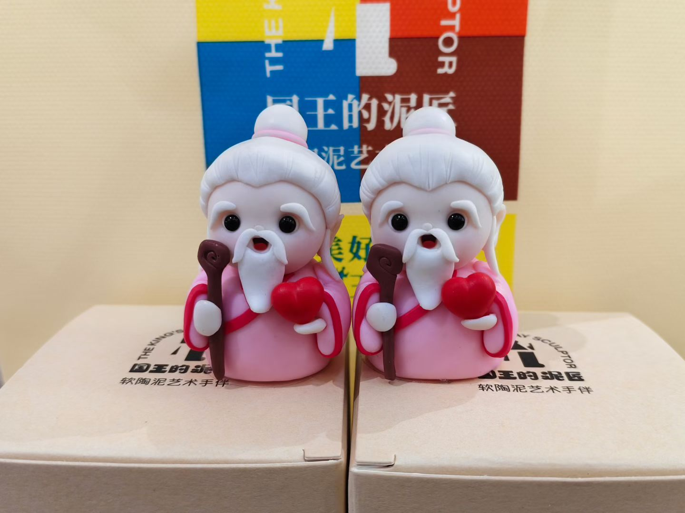
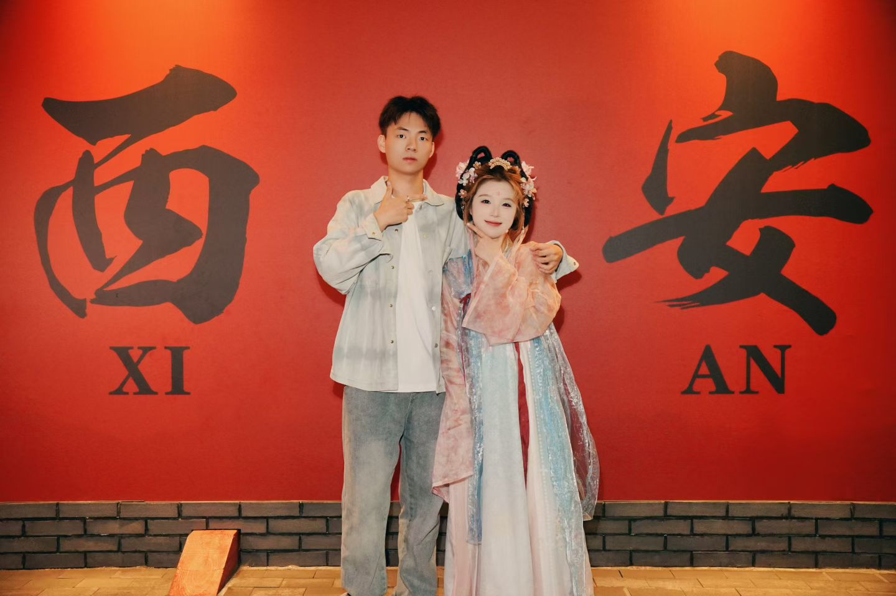
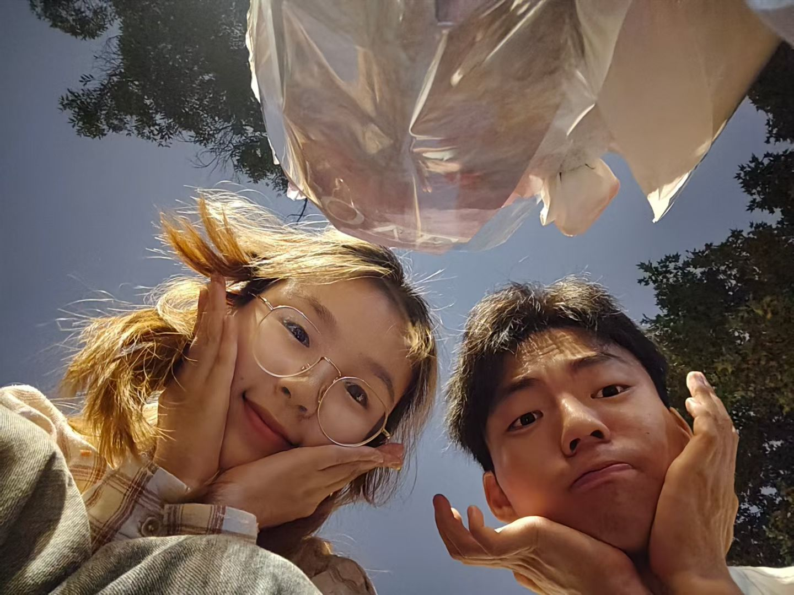
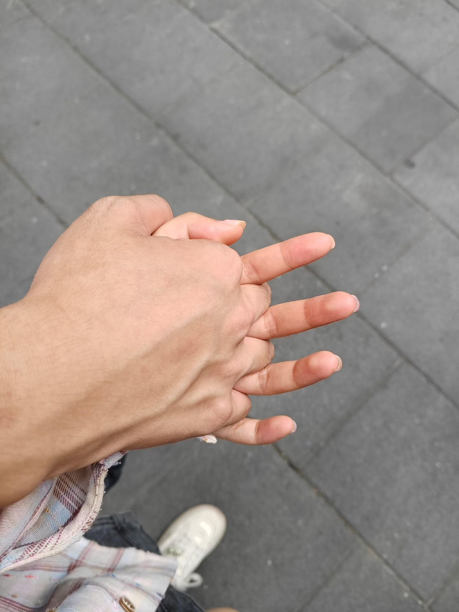
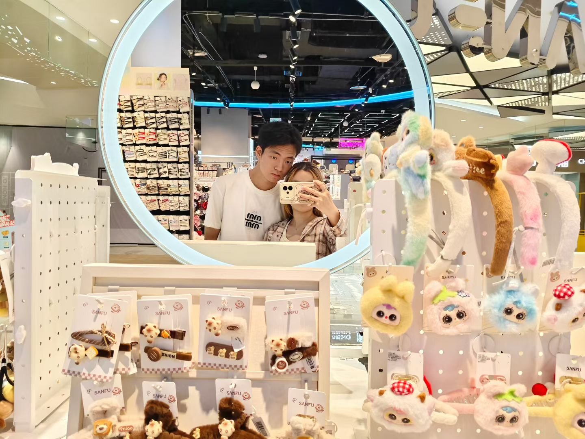
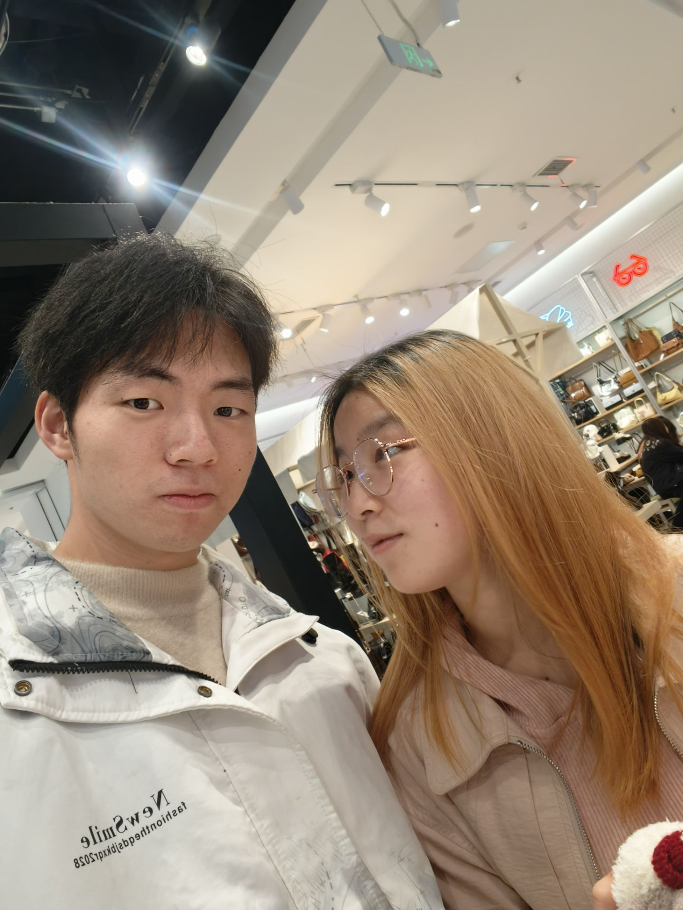
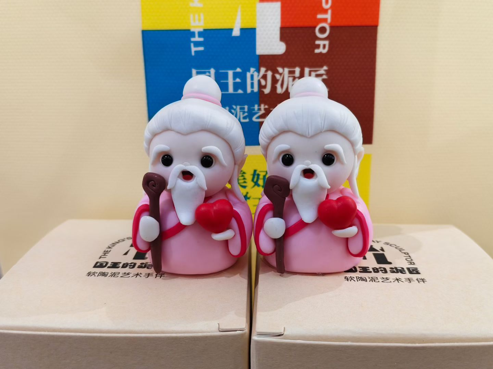
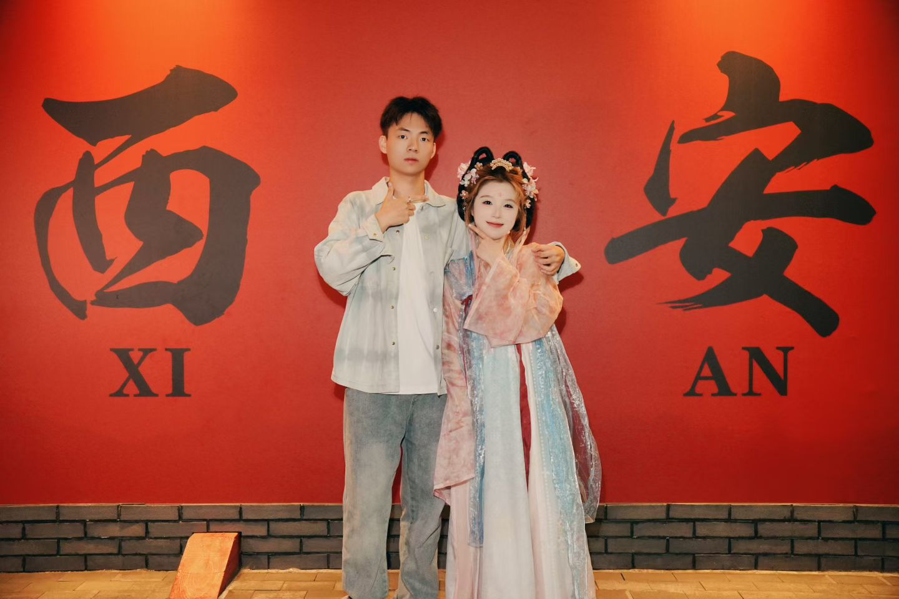
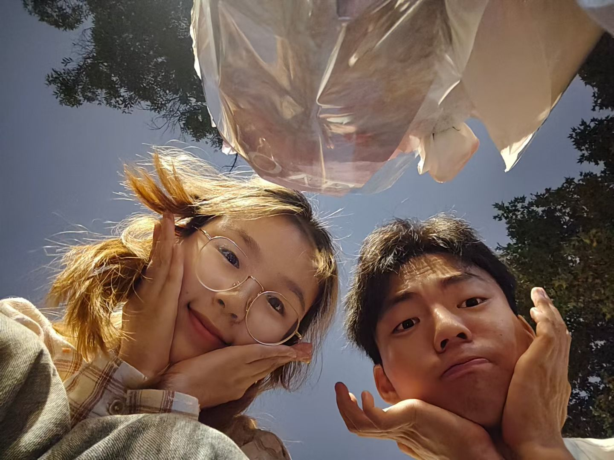
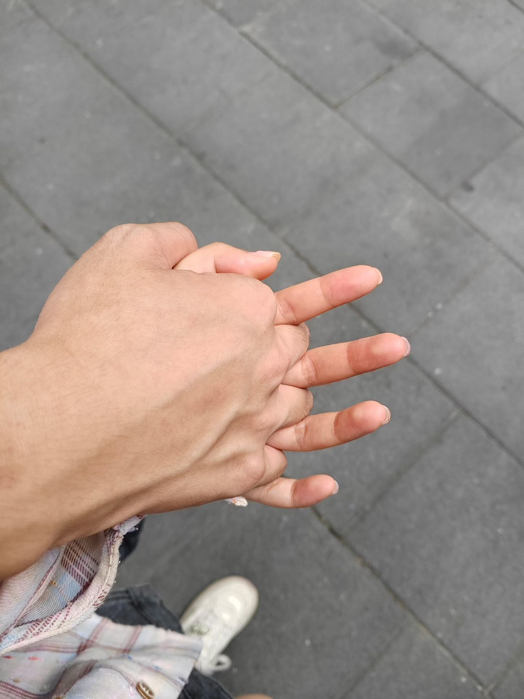
未来的愿望
想和你一起做的事，多到数不清
一起去旅行
想和你去看巴黎的铁塔，东京的樱花，马尔代夫的海
有一个我们的家
不需要多大，有你在就是最温暖的地方
养一只小宠物
一起照顾一个小生命，看它陪我们成长
一起看日出日落
在山顶等待第一缕阳光，然后告诉你"你比日出更美"
过每一个生日
每年给你一个惊喜，陪你吹蜡烛许愿
一起看雪
在雪地里牵着你的手，给你暖手，堆一个丑丑的雪人
学做一道你爱吃的菜
从手忙脚乱到得心应手，只为看到你满足的笑容
和你一起变老
头发白了，牙齿掉了，我还是觉得你最好看
我们的歌
每一首歌，都有我们的故事
我们的专属歌曲
点击播放按钮
比乐熊想陪橙子一起做很多很多很多事